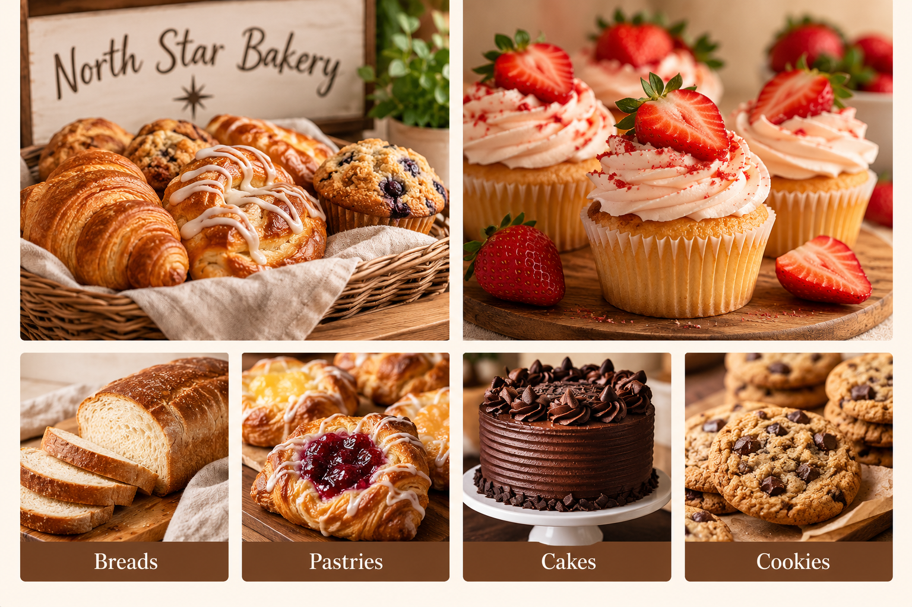

Our Story
North Star Bakery was created to be a welcoming neighborhood bakery where customers can enjoy handmade baked goods and connect with their community. We focus on fresh baking, friendly service, and products made with care.

Our Sourcing Philosophy
We value quality ingredients and thoughtful sourcing. Our bakery philosophy is centered on making fresh products while supporting a warm, community-focused customer experience.
Meet the Team
Our bakers and staff work together to prepare daily breads, pastries, and cakes while helping customers with questions and special orders.